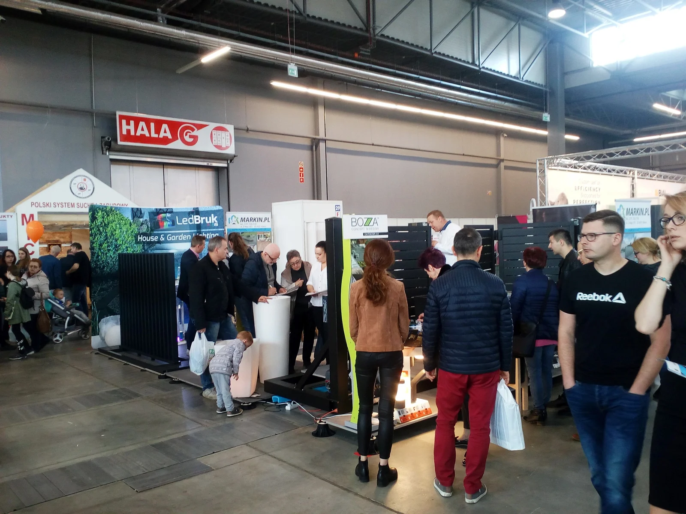

Strona główna / O firmie
O firmieMateriały. Pomysły.
Dobry kierunek.
Markin to miejsce dla osób, które chcą świadomie zaplanować otoczenie domu. Łączymy znajomość materiałów z doradztwem i spojrzeniem na całą przestrzeń.
Markin / Dom i ogród
Wszystko zaczyna się od rozmowy.
Łączymy materiały, pomysły i praktyczne doradztwo. Pomagamy klientom indywidualnym, inwestorom i architektom planować otoczenie domu: od ścieżek i podjazdów po taras, ogrodzenie oraz detale ogrodowe. W jednym miejscu dobierzesz rozwiązania i omówisz ich wycenę.
Przyjdź z wymiarami, zdjęciem elewacji albo kilkoma zapisanymi inspiracjami. Porównamy kierunki i ustalimy, od czego zacząć.

Dla klientów indywidualnych,
inwestorów i architektów.
inwestorów i architektów.
Materiały z historii MarkinBlisko pomysłów
Blisko pomysłów
i inspiracji.
Materiały archiwalne mogą przedstawiać wcześniejsze dane adresowe. Aktualny adres punktu: Radlin 193C, 26-008 Górno.